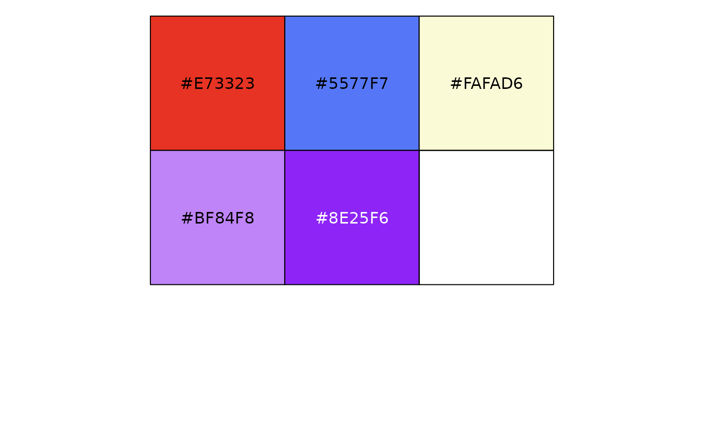

Character vector with names corresponding to endemism types and values corresponding to color codes. Original palette used by Mishler et al. (2014). May not be distinguishable to people with color vision deficiency (CVD).
mishler_endem_colsAn object of class character of length 5.
Color scheme:
paleo: blue
neo: red
not significant: beige
mixed: light purple
super: dark purple
Mishler, B., Knerr, N., González-Orozco, C. et al. (2014) Phylogenetic measures of biodiversity and neo- and paleo-endemism in Australian Acacia. Nat Commun, 5: 4473. doi:10.1038/ncomms5473
mishler_endem_cols
#> neo paleo not significant mixed super
#> "#E73323" "#5577F7" "#FAFAD6" "#BF84F8" "#8E25F6"
scales::show_col(mishler_endem_cols)
